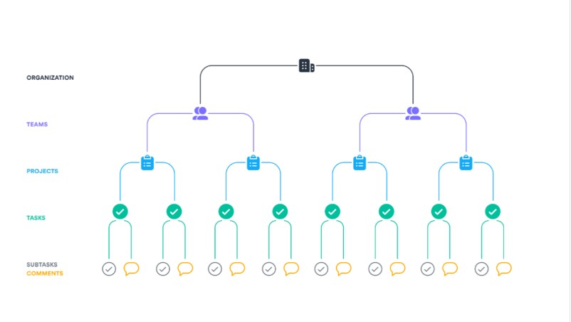
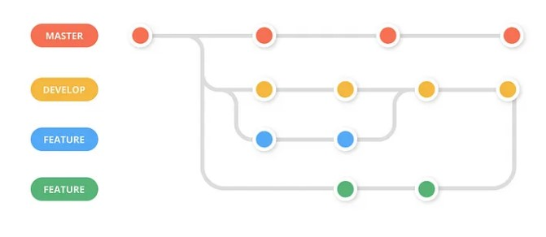

Choix des technologies de développement
Frontend: HTML, Vuejs, CSS
Backend: Laravel, MySQL
Forces
HTML est un langage de balisage simple qui est à la base de la construction de sites Web. Il indique aux navigateurs comment rendre les pages Web. Bien qu'il ne s'agisse pas de programmation au sens traditionnel,
Vuejsvous permet également d'écrire les modèles comme vous le souhaitez : en utilisant HTML, JS ou JSX (extension de syntaxe JavaScript). En raison de ses composants et de sa légèreté, Vue peut être utilisé dans presque tous les projets.
Laravel le langage a gagné en popularité ces derniers temps en raison de sa simplicité et de son évolutivité. Il est l'un des plus faciles à apprendre.
Faiblesses
HTML nécessite souvent un codage poussé et peut être difficile à apprendre.
Laravel a des mises à jour régulières, ce qui est excellent. Mais l'inconvénient est que les anciennes versions du produit deviennent rapidement boguées. De plus, les développeurs Web peuvent parfois rencontrer des difficultés lors de la mise à jour des nouvelles versions du logiciel.
Vuejs bien que l'écosystème soit assez large et qu'il existe tous les outils nécessaires pour commencer à développer avec Vue, il n'est toujours pas aussi grand que React ou Angular. Pour être plus précis, il suffit de comparer le nombre de plugins disponibles pour React et Vue.js : la différence se compte par centaines.
Choix et organisation des technologies de planification
Asana
Forces
L'interface utilisateur d'Asana conduit finalement à une bien meilleure expérience utilisateur. Il a été conçu avec soin et en tant que tel, il est très intuitif.
Asana s'intègre à de nombreuses autres applications de gestion de projet, telles que Google Drive, Microsoft Teams
La vue d'ensemble permet aux utilisateurs d'avoir sur toutes les tâches est étendue. Il permet aux utilisateurs de hiérarchiser facilement les tâches.Faiblesses
Il ne dispose d'aucun moyen de suivre le temps. Les capacités de suivi du temps sont communes à la plupart des options logicielles de gestion de projet.
Les fonctionnalités d'attribution des tâches d'Asana sont ternes. Un seul utilisateur peut être affecté à une tâche à la fois.
Organisation
Choix et organisation des technologies de gestion
Github
Forces
Il fournit un système de contrôle de version puissant et flexible basé sur Git qui permet aux équipes de suivre les modifications apportées à leur code au fil du temps, de collaborer sur le code avec d'autres et de conserver un historique de leur travail.
Le système de demande d'extraction de GitHub (Pull request) permet aux équipes d'examiner les modifications de code, de discuter des suggestions et de fusionner les modifications dans un emplacement central. Cela facilite la détection des bogues et garantit que la qualité du code reste élevée.
Faiblesses
GitHub propose des référentiels privés sur les niveaux gratuits et payants, mais même les référentiels privés ont leurs problèmes. Pour la propriété intellectuelle de grande valeur, vous mettez tout cela entre les mains de GitHub ainsi que de toute personne disposant d'une connexion, ce qui, comme de nombreux sites, a déjà subi des failles de sécurité et est constamment ciblé.
Il existe toujours une certaine insécurité et des risques dans le logiciel GitHub. Cela est dû au fait qu'il est basé sur le cloud. C'est pourquoi certains développeurs et clients ne font qu'aider à préférer travailler sur leur propre sécurité interne.
Organisation
Flux de travail Git de développement basé sur le tronc (branche de développement)
